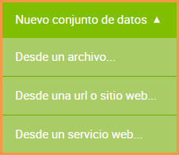

4. Creación de un Conjunto de Datos¶
Para crear un conjunto de datos lo primero que se debe hacer es:
Posicionarse sobre el botón → Conjunto de datos
Seleccionar una opcion para la recolección de datos como se muestra en la imagen a continuación:

Otra opción para poder acceder es:
Ingresar a la sección → Conjuntos de Datos

Presione el botón que se encuentra en la parte superior a la derecha → Nuevos Conjuntos de Datos
Seleccionar una opción de recolección de datos →
4.1 Desde un Archivo¶
La Plataforma brinda la posibilidad de utilizar archivos recolectados desde su computador como Conjunto de Datos, cargarlos a la plataforma y convertirlos en recursos de datos abiertos.
Seleccione el archivo desde su computador y arrastre hacia la pantalla. Tenga en consideracion que el tamaño maximo permitido es 300 MB y que los archivos deben estar codificados en UTF-8.
A continuación se hará la carga de datos y metadatos la cual consta de campos requeridos (*) que deben ser completados, pudiendo omitirse los otros. Se podrá seleccionar una categoría que sirva para clasificar al conjunto de datos para que sea mas fácil de filtrar a la hora de su búsqueda.
Posteriormente, se puede seleccionar si su uso será público o privado.
En el margen inferior, se puede agregar información contextual la cual es opcional.
Las opciones disponibles incluyen:
Fuente de los datos: Origen donde se creó el conjunto de datos.
Etiquetas: Sirven para identificar el contenido del conjunto de datos.
Anotaciones o aclaraciones adicionales: Información que pueda ser relevante para el usuario final.
En el sector derecho se puede seleccionar:
Bajo que licencia se publicara el conjunto de datos
Frecuencia de actualización
Agregar mail de consulta
Referencia geográfica
Documentación técnica
Luego de completar los campos deseados, presione el botón Continuar.
4.2 Desde una URL o sitio web¶
También nuestra Plataforma permite recolectar datos desde un Sitio Web o Archivos hospedados en la red como Conjunto de Datos, cargarlos a la plataforma y convertirlos en recursos de datos abiertos.
Sitio Web: Ingrese una URL con un enlace válido a la página web desde donde se quiera recolectar. Luego de completar los campos requeridos, presione el botón Continuar.
Archivos hospedados en la red: Se sigue el mismo procedimiento anterior, sin embargo lo que cambia es la fuente de la información. Para esta opción se requiere copiar una dirección de enlace de algún documento en alguno de los formatos soportados por Junar. Para ver la lista completa, ver la sección: ¿Que es un Conjunto de Datos?
A continuación se hará la carga de datos y metadatos la cual consta de campos requeridos (*) y opcionales que deben ser completados como es explicado en el apartado 4.1.
4.3 Desde un Servicio Web¶
Nuestra Plataforma permite recolectar datos no solamente desde archivos locales, Sitio Web o Archivos Hospedados en la red, sino también a través de Servicios Web SOAP o REST, cargarlos a nuestra plataforma y convertirlo en un recurso de datos abiertos.
Servicios Web SOAP¶
Determine el tipo de servicio web SOAP/XML.
Ingrese la URL desde donde se está obteniendo el Servicio Web. También se pueden seleccionar los siguientes parámetros:
Método: Nombre del método asociado al conjunto de datos que queremos obtener.
Espacio de Nombres: Provee un método para evitar conflictos de nombre entre recursos.
Configuración avanzada: Aparecen distintas opciones.
Ruta a los datos: Permite acceder a la tabla de datos buscada agregando un atributo XML
Indicar nombre y contraseña en caso de que sea necesario para acceder al servicio web
Agregar campos extendidos: Los campos extendidos se utilizan para extraer datos por fuera de la tabla de datos y cabeceras. Para cada campo debe ingresar nombre, descripción y ruta.
Agregar otros parámetros: En el caso de que sean necesarios para acceder al sitio web. Estos parámetros deben ingresarse respetando mayúsculas y minúsculas. Esta información suele encontrarse en el mismo sitio desde donde se desea obtener la información, como también puede consultarle al administrador del sistema que esté albergando los servicios web.
Servicios Web REST¶
De manera similar a los servicios web SOAP, podemos obtener datos y recolectarlos como Conjunto de Datos desde objetos JSON.
Determine el tipo de servicio web REST/JSON. A continuación, ingrese la URL desde donde se está obteniendo el Servicio Web.
Hay casos donde también es necesario el siguiente parámetro:
Ruta a los datos: Define la ruta (xpath o json-path) para acceder a los datos de la tabla.
Configuración avanzada: Aparecen distintas opciones:
Evaluación de la ruta a los datos: Deberás ingresar los nodos a los que quiere acceder. Los mismos deberán estar separados por | (barra vertical) y si quiere acceder a los hijos de un nodo, se deberá usar . (punto).
En el caso de que tengan títulos, se pueden identificar como se muestra en la imagen. En el caso de que esten en una ruta diferente a la de los datos, se deberá configurar la ruta a las cabeceras (path-to-headers).
GET, POST, PUT, PATCH son las 4 peticiones que son soportadas por el servicio de Junar.
En el caso de que sea necesario autenticación para conectarse al servicio web ingresar nombre de usuario y contraseña.

En el caso de que sea necesario autenticación para conectarse al servicio web ingresar el nombre del argumento de la firma, el token de la firma y en el caso de que haga falta un algoritmo, se agrega en la última línea.
Agregar campos extendidos: Los campos extendidos se utilizan para extraer datos por fuera de la tabla de datos y cabeceras. Para cada campo debe ingresar nombre, descripción y ruta.
Estructura de autenticación: En el caso de que sea necesario un token.
Esta opción permite agregar cabeceras
Agregar otros parámetros: En el caso de que sean necesarios para acceder al sitio web.
Estos parámetros deben ingresarse respetando mayúsculas y minúsculas.
Una vez que se han ingresado los parámetros de manera exitosa, el Servicio Web será procesado de manera normal por lo que los pasos de recolección de los datos son los mismos que para el resto de las fuentes. Luego de completar los campos/parámetros requeridos, presione el botón Continuar.
El sistema visualiza la siguiente pantalla, complete los campos requeridos (*), pudiendo omitirse los siguientes: Categoría, Uso, Fuentes, Etiquetas y Notas del Conjunto de Datos así como el cuadro de información adicional. Luego de completar los campos requeridos, presione el botón Guardar. El Conjunto de Datos se crea por defecto en estatus de Borrador.
4.4 Desde archivos alojados en Dropbox¶
Junar permite recoletar datos desde archivos alojados en Dropbox. La ventaja de este conjunto de datos es que al modificarse el archivo alojado en Dropbox, la plataforma detectará el cambio y actualiará los recursos de manera automática, sin necesidad de editar los recursos desde el espacio de trabajo.
Para habilitar el modulo de conjuntos de datos desde Dropbox debe ingresar a su cuenta de Dropbox seguir los siguientes pasos:
1. Crear una aplicacion en la cuenta de Dropbox y obtener el token para acceder a la API¶
Ingrese a https://www.dropbox.com/developers/apps y haga clic en el boton Create app.
Luego, debe seleccionar las opciones resaltadas en la imagen:
Chose an API: Dropbox API
Choose the type of access you need: Full Dropbox
Name your app: Junar (o el nombre que usted decida)
Debe aceptar los términos y condiciones,
Por último, hacer clic en el botón
Create ap.
Luego, verá lo siguiente. Para generar la clave token, debe hacer clic sobre el botón Generate, tal como se resalta en la imagen:
Al hacer clic en el botón, Dropbox generará una clave token.
Copie esa clave y enviela a support@junar.com indicando el nombre de su cuenta. Con esos datos, habilitaremos el módulo que le permitirá crear conjuntos de datos desde archivos alojados en Dropbox.
2. Crear conjuntos de datos desde Dropbox¶
Una vez habilitado el módulo, se mostrará la opción Crear conjuntos de datos desde Dropbox.
Primero, debe localizar el archivo en su cuenta de Dropbox y extraer la ruta al archivo. En este ejemplo, la ruta al archivo es /Junar/Datasets/dataset_de_prueba.csv.
Esa ruta, debe escribirla en el siguiente campo:
Luego, deberá completar los metadatos como en cualquier otro caso.
4.5 Edición de un Conjunto de Datos¶
Una vez creado el Conjunto de Datos, se visualiza el mismo en un listado, este listado cuenta con una paginación, es decir que se puede ir avanzando página por página dentro del listado o bien presionando la página correspondiente a la que desea acceder, de esta manera esa página es mostrada en el listado de Conjuntos de Datos correspondiente. Para esto se dirige a la sección → Conjuntos de Datos

Para Editar un Conjunto de Datos, hay dos opciones:
Clic sobre el Conjunto de Datos: El sistema visualiza la información del Conjunto de Datos seleccionado, presione el icono
 e introduzca los cambios sobre la información del Conjunto de Datos.
e introduzca los cambios sobre la información del Conjunto de Datos.

Acercar el mouse sobre el Conjunto de Datos: Se visualizan las siguientes opciones:
Crear Vistas: Al hacer click sobre este botón puede crear una nueva Vista, tomando como referencia el Conjunto de datos seleccionado.
Editar: Al hacer click sobre este botón puede realizar cambios a la información del Conjunto de Datos.
Borrar: Al hacer click sobre este botón puede borrar los cambios recientes del Conjunto de datos o todos los cambios el Conjunto de datos.
Fuente/Descargar Original: Al hacer click sobre este botón accede a la página del recurso o descarga el archivo adjunto del Conjunto de Datos.
Cuando el Conjunto de Datos se encuentra En revisión:
Los usuarios con rol de Editor pueden enviar un Conjunto de Datos a Revisión, el Conjunto de Datos en este estatus no puede ser editado, su opción de editar solo es posible cuando el recurso es Aprobado o Rechazado.

Los usuarios con rol de Publicador o Administrador podrán Aceptar o Rechazar el recurso.

4.6 Publicación de un Conjunto de Datos¶
Para publicar un Conjunto de Datos en el portal de datos abiertos, haga click sobre el botón Publicar.

Para acceder al portal de datos abiertos y visualizar el Conjunto de Datos publicado , haga clic sobre  , localizado en el margen superior derecho de la visualización del Conjunto de Datos.
, localizado en el margen superior derecho de la visualización del Conjunto de Datos.
4.7 Eliminación de un Conjunto de Datos¶
Para eliminar un Conjunto de Datos, hay dos opciones:
Dentro del Conjunto de Datos, haga clic sobre

En el listado de Conjuntos de Datos, seleccione un Conjunto de Datos y presione el botón


El sistema permite eliminar la revisión actual o todas las revisiones del Conjunto de Datos. Esta última acción elimina el Conjunto de Datos y todos sus recursos asociados, como así también los elimina del portal de datos abiertos. Por Revisión se entiende los distintos cambios realizados sobre la información del Conjunto de Datos.